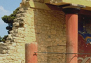
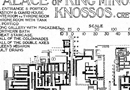

Greek and Roman History and Mythology
1) Neolithic Period
People first entered Greece over 40,000 years ago. Around 6500 B.C.E. agriculture arose in Greece in the early Neolithic period, also known as the late Stone Age, after the warming of the climate in Greece subsequent to the Ice Age. This period in Greece is not of direct concern to our study of mythology. The inhabitants of Greece at this time were not Greek speakers.
2) Early and Middle Bronze Ages
The innovation of bronze, by adding tin to copper, allowed for a great deal of development in Greece between c. 3000 and 1600 B.C.E., what is considered the early and middle bronze age. Bronze resulted in more powerful and effective tools and weapons. Economy, trade, and the size of settlements grew significantly during this period. At this time the Near East, the Sumerian and Akkadian civilizations in Mesopotamia (modern day Iraq), were far more advanced than those in the Greek world, but Greek communities were nonetheless sizeable. It is also in the Middle Bronze age that historians have traditionally dated the arrival of the first Greek speakers into Greece, a dating based upon evidence for the destruction of earlier settlements at this period. More recently the dating of the arrival of the first Greek speakers is again open to debate; it may be that their arrival was more gradual than has often been assumed. But it is at least certain that Greek speakers had entered the Greek world by the middle bronze age. Earlier languages were non Indo-European ‘Aegean’ languages, of which we know little, and the Greek language eventually replaced these early languages, with only a few words (plants and animals) surviving.
3) Late Bronze Age (Mycenaean)
The first period of real importance for our study of Greek and Roman mythology is the Middle to Late Bronze Age, also known as the Mycenaean period. It was only in the late nineteenth century that we came to realize that there were advanced civilizations existing during the bronze age. In 1899 Arthur Evans discovered the site of Knossos, in Crete, a large palace of what was a powerful and influential society known as the Minoans (named by Evans after king Minos of Crete, father of the Minotaur in Greek mythology). Crete was an important trade centre and Minoan civilization developed due partially to influence from the Near East. The large palace still visible today at Knossos was built c. 1700 B.C.E.  and the Minoans came to have a great deal of influence on the Greek societies that were developing on the Greek mainland at this time, what is known as Mycenaean civilization. Mycenaean civilization on mainland Greece was also developing during the Middle Bronze Age and learning from Minoan and Near Eastern civilizations. In c.1600-1400 the Mycenaean kingdoms first started to build large palaces and flourished in Greece until c.1150 B.C.E. (see images 3-5).
{kind=link}
{kind=link}
{kind=link}
{kind=link}
{kind=link}
In 1450 B.C.E. we know that the Mycenaeans took over Crete. In Mycenaean civilization we find some roots of Greek religion and mythology. Many aspects of the myth of the Trojan war, for example, derive from Mycenaean civilization, from descriptions of instruments to the gods involved. The Trojan war is now thought by many to be based on an actual conflict in the cite of Troy in the Troad (excavated by Heinrich Schliemann). We will look in more detail at this when we examine Homer’s Iliad.Around 1200 B.C.E., however, Mycenaean civilization suffered a collapse, for reasons which are not entirely clear, and Greece entered what is known as a ‘dark age’.
4) Dark Age, c. 1150-900 and period of revival c. 900 -750.
Despite being a dark age in many ways culturally and politically, it is during this period that the mastery of iron was achieved and there were innovations in potting that allowed for new shapes and designs to emerge. Extremely important was the development of the alphabet.
5) Archaic Period, c. 750-500 B.C.E.
Prior to the so-called Archaic period, myth and legend were transmitted orally in Greece. Oral transmission continued, just as it continues today in even our hyper-literate society, but particular versions of myth first came to be recorded in the Archaic period sometime in the late eighth or seventh centuries. At least, versions of myth from this period are the first to have survived to us today, such as the poems of Hesiod, Homer, and the so-called Homeric Hymns. Colonization, expansion, and innovation characterize the Archaic period in Greece.
6) Classical Period, c. 500-323 B.C.E.
The historical record of the so-called Classical period is dominated by the Athenian perspective which held enormous power in the Mediterranean from the rise of democracy at the end of the sixth century until the campaigns of Philip II of Macedon and his son Alexander the Great. Myth was retold and adapted in many forms during the Classical period, including in dramatic performances developed for the first time in Athens. For example, the tragedies of Aeschylus, Sophocles, and Euripides (the three most famous tragedians) deal chiefly with mythological themes, while the comedies of the renowned Aristophanes often draw upon and parody mythological material.
7) Hellenistic Period c. 323-30 B.C.E.
The Hellenistic period, often said to begin after the death of Alexander the Great in 323 B.C.E. and to end with the death of Cleopatra in 30 B.C.E., is a time of great change and innovation in the Mediterranean. Alexander the Great’s campaigns spread Greek culture widely and opened a larger world to Greek-speaking peoples. The period is dominated politically by kingdoms, most prominently the Ptolemaic Kingdom in Egypt. It is during this time that Greek scholarship and the study of its literary past began in earnest. Authors of this period draw upon and record earlier versions of myths, as they at the same time adapt and experiment with genres in often subtle ways. Remember that there is seldom just one version of myths which were recast again and again in transmission.
8) Foundation of Rome and Roman Republic c. 753 B.C.E. – 27 B.C.E.
Alongside the developments in Greek history noted above, one must also be aware of the parallel major periods of Roman civilization which came to dominate the Mediterranean shortly before and following the turn of the millennium. The traditional date for the foundation of Rome is often given as 753 B.C.E. (we will look at the foundation myth later in the course). The Roman Republic is then said to be founded in 509/507 B.C.E. which lasted until the end of the first century B.C.E. with assassination of Julius Caesar, civil war, and the rise to power of the first Roman emperor Augustus in 27 B.C.E. (also known as Octavian). For our purposes, it is important to note that the first Roman literature which we possess is from the 2nd century B.C.E., including the comic plays of Plautus (c. 205-184 B.C.E.) and Terence (plays produced 166-159 B.C.E.). But it is in the late Republic, the first century B.C.E., that Roman literature reach what is often called its golden age. During this period we have the writings of poets such as Lucretius and Catullus (both active in the 50s B.C.E.) and historians and rhetoricians such as the famous Cicero (active 81-43 B.C.E.) or Sallust (active 40s B.C.E.). Roman literature and art of this and later periods often draw extensively upon Greek versions of myth and compositional techniques, but Roman versions are not slavish. They change and adapt mythology to their own ends.
9) Early and High Roman Empire, 27 B.C.E. – 200 C.E.
The period from the rise of Augustus until the third century C.E. is often referred to as the early (27B.C.E. – 69 C.E.) and high (69 - 200 C.E.) Roman empire. The end of the Republican period through the reign of Augustus (27 – 14 C.E.) was a thriving time for Roman literature (often called Augustan literature). It was during this period that the poets Vergil (active early 30s to c. 19 B.C.E.) and Ovid (active 20s B.C.E. to 17 C.E.) rose to fame, poets whose works are important sources of Greco-Roman mythology. We will encounter them frequently in this course. Following the Augustan Age, Roman literature continued to thrive, but also changed as it innovated upon earlier models of both Greek and Roman literature. It should also not be forgotten that Greek literature continues to be composed during the Roman imperial period, and we will at time throughout the course look at both Greek and Roman sources from this innovative time.